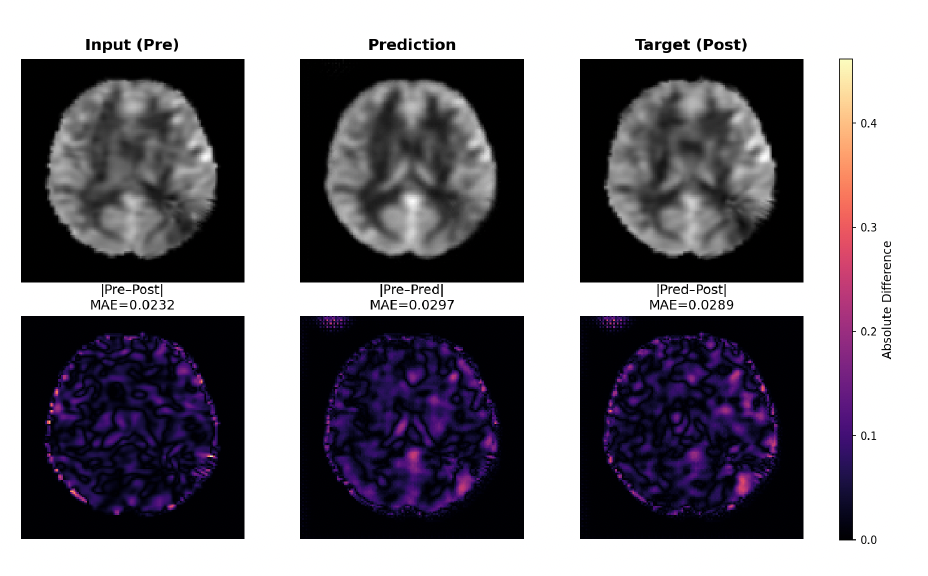

Our paper Generating Post-Acetazolamide Cerebral Blood Flow MRI for High-Risk Stroke Patients, led by Rydham Goyal with Gary Steinberg's groups at Stanford, was presented at Medical Imaging with Deep Learning (MIDL 2026) in Taipei. A conditional autoencoder trained on 194 Moyamoya patients predicts the post-acetazolamide perfusion slice from baseline ASL MRI, outperforming three diffusion-based baselines and pointing towards drug-free assessment of cerebrovascular reserve.